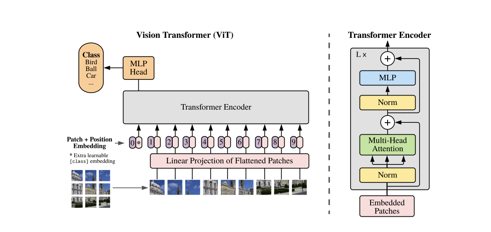
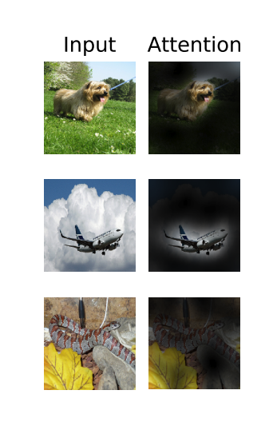
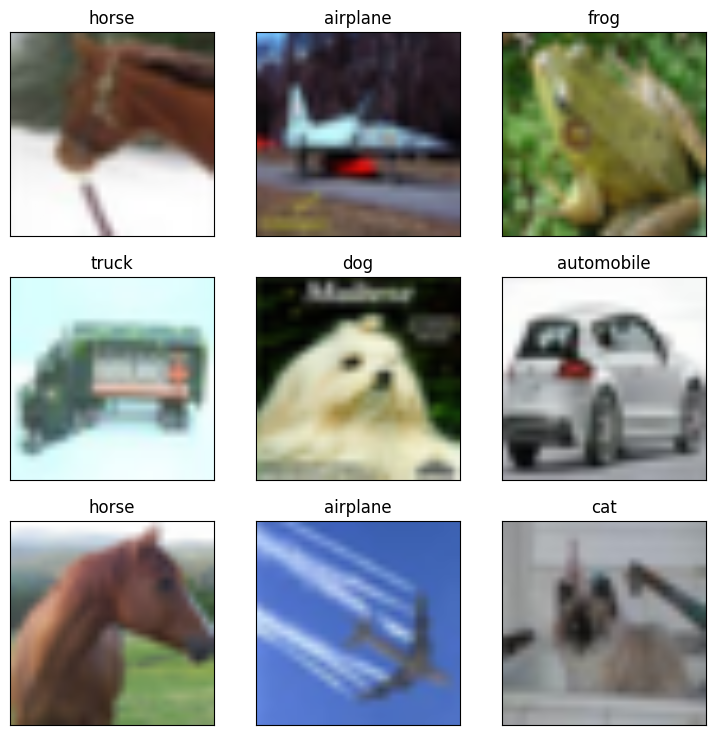
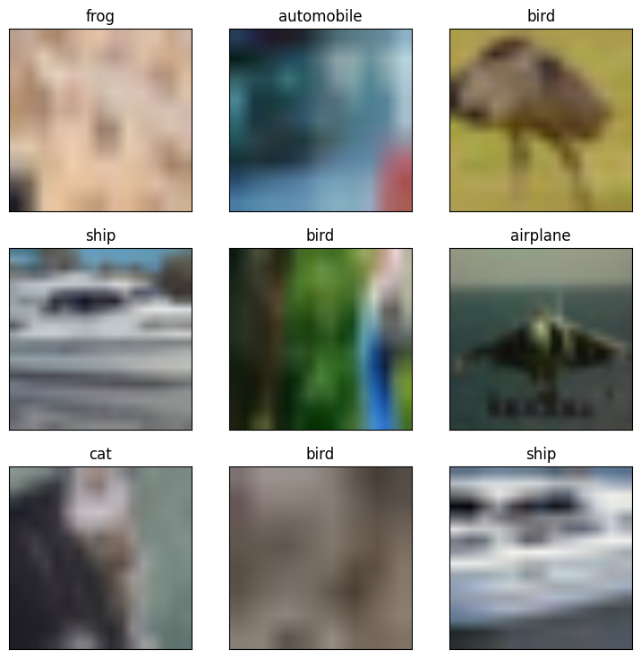
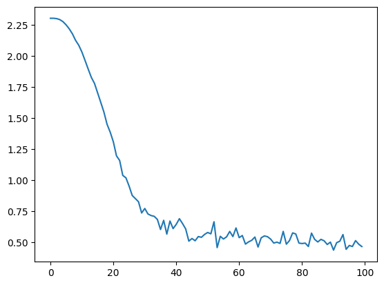
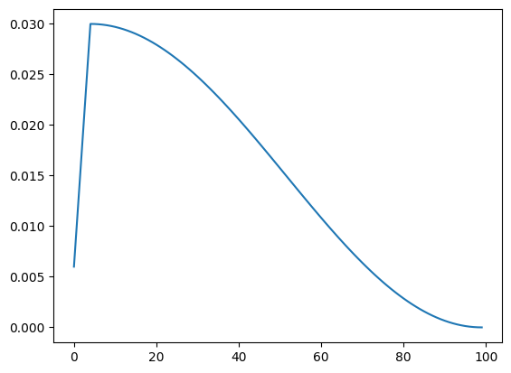

#@title Licensed under the Apache License, Version 2.0 (the "License");
# Licensed under the Apache License, Version 2.0 (the "License");
# you may not use this file except in compliance with the License.
# You may obtain a copy of the License at
#
# https://www.apache.org/licenses/LICENSE-2.0
#
# Unless required by applicable law or agreed to in writing, software
# distributed under the License is distributed on an "AS IS" BASIS,
# WITHOUT WARRANTIES OR CONDITIONS OF ANY KIND, either express or implied.
# See the License for the specific language governing permissions and
# limitations under the License.10 Vision Transformer
Colab with minor adjustments from Google Research: https://github.com/google-research/vision_transformer/
See papers at
- Vision Transformer: https://arxiv.org/abs/2010.11929
- MLP-Mixer: https://arxiv.org/abs/2105.01601
- How to train your ViT: https://arxiv.org/abs/2106.10270
- When Vision Transformers Outperform ResNets without Pretraining or Strong Data Augmentations: https://arxiv.org/abs/2106.01548
This Colab allows you to run the JAX implementation of the Vision Transformer.
If you just want to load a pre-trained checkpoint from a large repository and directly use it for inference, you probably want to go this Colab.

- Images are split into “patches”
- Patch embeddings: get linear embeddings from the patches. These is also often called “representations”.
- From the patch embeddings, add positional embeddings to derive the relevance of the patches to one another and how they combine to form an image. A [cls] token is also added, as with language models. These are included so that information is carried into positional encodings, helping the model understand its relation to other tokens and spatial relationships in the image.
- Send these embeddings through a Transformer encoder, generate output values for the [cls] tokens.
- These representations / embeddings of [cls] tokens are then sent through the head of a multi-layer perceptron neural net to get class predictions.

10.0.0.0.1 Copyright 2021 Google LLC.

10.0.1 Setup
Needs to be executed once in every VM.
The cell below downloads the code from Github and install necessary dependencies.
#@markdown Select whether you would like to store data in your personal drive.
#@markdown
#@markdown If you select **yes**, you will need to authorize Colab to access
#@markdown your personal drive
#@markdown
#@markdown If you select **no**, then any changes you make will diappear when
#@markdown this Colab's VM restarts after some time of inactivity...
use_gdrive = 'no' #@param ["yes", "no"]
if use_gdrive == 'yes':
from google.colab import drive
drive.mount('/gdrive')
root = '/gdrive/My Drive/vision_transformer_colab'
import os
if not os.path.isdir(root):
os.mkdir(root)
os.chdir(root)
print(f'\nChanged CWD to "{root}"')
else:
from IPython import display
display.display(display.HTML(
'<h1 style="color:red">CHANGES NOT PERSISTED</h1>'))CHANGES NOT PERSISTED
# Clone repository and pull latest changes.
![ -d vision_transformer ] || git clone --depth=1 https://github.com/google-research/vision_transformer
!cd vision_transformer && git pullCloning into 'vision_transformer'...
remote: Enumerating objects: 49, done.
remote: Counting objects: 100% (49/49), done.
remote: Compressing objects: 100% (44/44), done.
remote: Total 49 (delta 6), reused 18 (delta 1), pack-reused 0
Unpacking objects: 100% (49/49), 1.86 MiB | 6.00 MiB/s, done.
Already up to date.!pip install -qr vision_transformer/vit_jax/requirements.txt Preparing metadata (setup.py) ... done
━━━━━━━━━━━━━━━━━━━━━━━━━━━━━━━━━━━━━━━━ 98.2/98.2 kB 7.6 MB/s eta 0:00:00
━━━━━━━━━━━━━━━━━━━━━━━━━━━━━━━━━━━━━━━━ 42.2/42.2 kB 4.8 MB/s eta 0:00:00
━━━━━━━━━━━━━━━━━━━━━━━━━━━━━━━━━━━━━━━━ 77.9/77.9 kB 10.1 MB/s eta 0:00:00
Preparing metadata (setup.py) ... done
━━━━━━━━━━━━━━━━━━━━━━━━━━━━━━━━━━━━━━━ 231.8/231.8 MB 2.5 MB/s eta 0:00:00
━━━━━━━━━━━━━━━━━━━━━━━━━━━━━━━━━━━━━━━━ 6.0/6.0 MB 106.7 MB/s eta 0:00:00
━━━━━━━━━━━━━━━━━━━━━━━━━━━━━━━━━━━━━━ 390.5/390.5 kB 36.0 MB/s eta 0:00:00
━━━━━━━━━━━━━━━━━━━━━━━━━━━━━━━━━━━━━━━━ 1.3/1.3 MB 83.0 MB/s eta 0:00:00
Installing build dependencies ... done
Getting requirements to build wheel ... done
Preparing metadata (pyproject.toml) ... done
━━━━━━━━━━━━━━━━━━━━━━━━━━━━━━━━━━━━━━━━ 1.3/1.3 MB 63.0 MB/s eta 0:00:00
Installing build dependencies ... done
Getting requirements to build wheel ... done
Preparing metadata (pyproject.toml) ... done
━━━━━━━━━━━━━━━━━━━━━━━━━━━━━━━━━━━━━━━━ 1.2/1.2 MB 62.4 MB/s eta 0:00:00
Installing build dependencies ... done
Getting requirements to build wheel ... done
Preparing metadata (pyproject.toml) ... done
━━━━━━━━━━━━━━━━━━━━━━━━━━━━━━━━━━━━━━━ 149.6/149.6 MB 6.8 MB/s eta 0:00:00
Building wheel for flaxformer (setup.py) ... done
Building wheel for ml-collections (setup.py) ... done
Building wheel for jax (pyproject.toml) ... done10.0.2 Imports
# Shows all available pre-trained models.
!gsutil ls -lh gs://vit_models/imagenet*
!gsutil ls -lh gs://vit_models/sam
!gsutil ls -lh gs://mixer_models/*gs://vit_models/imagenet21k+imagenet2012/:
377.57 MiB 2020-11-30T16:17:02Z gs://vit_models/imagenet21k+imagenet2012/R50+ViT-B_16.npz
330.29 MiB 2020-10-29T17:05:52Z gs://vit_models/imagenet21k+imagenet2012/ViT-B_16-224.npz
331.4 MiB 2020-10-20T11:48:22Z gs://vit_models/imagenet21k+imagenet2012/ViT-B_16.npz
336.89 MiB 2020-10-20T11:47:36Z gs://vit_models/imagenet21k+imagenet2012/ViT-B_32.npz
334.78 MiB 2021-03-12T09:04:16Z gs://vit_models/imagenet21k+imagenet2012/ViT-B_8.npz
1.13 GiB 2020-10-29T17:08:31Z gs://vit_models/imagenet21k+imagenet2012/ViT-L_16-224.npz
1.14 GiB 2020-10-20T11:53:44Z gs://vit_models/imagenet21k+imagenet2012/ViT-L_16.npz
1.14 GiB 2020-10-20T11:50:56Z gs://vit_models/imagenet21k+imagenet2012/ViT-L_32.npz
gs://vit_models/imagenet21k/:
450.23 MiB 2021-01-20T14:12:43Z gs://vit_models/imagenet21k/R26+ViT-B_32.npz
439.85 MiB 2020-11-30T10:10:15Z gs://vit_models/imagenet21k/R50+ViT-B_16.npz
1.31 GiB 2021-01-20T14:11:54Z gs://vit_models/imagenet21k/R50+ViT-L_32.npz
393.69 MiB 2020-10-22T21:38:39Z gs://vit_models/imagenet21k/ViT-B_16.npz
400.01 MiB 2020-11-02T08:30:56Z gs://vit_models/imagenet21k/ViT-B_32.npz
393.72 MiB 2021-03-10T13:28:28Z gs://vit_models/imagenet21k/ViT-B_8.npz
2.46 GiB 2020-11-03T10:46:11Z gs://vit_models/imagenet21k/ViT-H_14.npz
1.22 GiB 2020-11-09T14:39:51Z gs://vit_models/imagenet21k/ViT-L_16.npz
1.23 GiB 2020-11-02T08:35:10Z gs://vit_models/imagenet21k/ViT-L_32.npz
TOTAL: 17 objects, 14306096550 bytes (13.32 GiB)
330.3 MiB 2021-07-13T19:39:09Z gs://vit_models/sam/ViT-B_16.npz
336.61 MiB 2021-07-13T19:39:10Z gs://vit_models/sam/ViT-B_32.npz
1.13 GiB 2021-07-13T19:39:38Z gs://vit_models/sam/ViT-L_16.npz
1.14 GiB 2021-07-13T19:39:38Z gs://vit_models/sam/ViT-L_32.npz
252.57 MiB 2022-02-18T06:43:52Z gs://vit_models/sam/ViT-S_16.npz
TOTAL: 5 objects, 3407859850 bytes (3.17 GiB)
6 B 2021-06-28T13:07:12Z gs://mixer_models/sam_$folder$
gs://mixer_models/gsam/:
228.47 MiB 2022-07-21T05:47:43Z gs://mixer_models/gsam/Mixer-B_16.npz
230.04 MiB 2022-07-21T05:48:18Z gs://mixer_models/gsam/Mixer-B_32.npz
70.71 MiB 2022-07-21T05:48:30Z gs://mixer_models/gsam/Mixer-S_16.npz
72.91 MiB 2022-07-21T05:48:42Z gs://mixer_models/gsam/Mixer-S_32.npz
78.79 MiB 2022-07-21T05:48:56Z gs://mixer_models/gsam/Mixer-S_8.npz
gs://mixer_models/imagenet1k/:
228.47 MiB 2021-05-05T14:09:01Z gs://mixer_models/imagenet1k/Mixer-B_16.npz
794.29 MiB 2021-05-05T14:09:02Z gs://mixer_models/imagenet1k/Mixer-L_16.npz
gs://mixer_models/imagenet21k/:
289.61 MiB 2021-05-05T14:09:11Z gs://mixer_models/imagenet21k/Mixer-B_16.npz
875.78 MiB 2021-05-05T14:09:12Z gs://mixer_models/imagenet21k/Mixer-L_16.npz
gs://mixer_models/sam/:
228.47 MiB 2021-06-28T13:08:09Z gs://mixer_models/sam/Mixer-B_16.npz
230.04 MiB 2021-06-28T13:08:08Z gs://mixer_models/sam/Mixer-B_32.npz
TOTAL: 12 objects, 3489219014 bytes (3.25 GiB)# Download a pre-trained model.
# Note: you can really choose any of the above, but this Colab has been tested
# with the models of below selection...
model_name = 'ViT-B_32' #@param ["ViT-B_32", "Mixer-B_16"]
if model_name.startswith('ViT'):
![ -e "$model_name".npz ] || gsutil cp gs://vit_models/imagenet21k/"$model_name".npz .
if model_name.startswith('Mixer'):
![ -e "$model_name".npz ] || gsutil cp gs://mixer_models/imagenet21k/"$model_name".npz .
import os
assert os.path.exists(f'{model_name}.npz')Copying gs://vit_models/imagenet21k/ViT-B_32.npz...
/ [1 files][400.0 MiB/400.0 MiB]
Operation completed over 1 objects/400.0 MiB. # Google Colab "TPU" runtimes are configured in "2VM mode", meaning that JAX
# cannot see the TPUs because they're not directly attached. Instead we need to
# setup JAX to communicate with a second machine that has the TPUs attached.
import os
if 'google.colab' in str(get_ipython()) and 'COLAB_TPU_ADDR' in os.environ:
import jax
import jax.tools.colab_tpu
jax.tools.colab_tpu.setup_tpu()
print('Connected to TPU.')
else:
print('No TPU detected. Can be changed under "Runtime/Change runtime type".')No TPU detected. Can be changed under "Runtime/Change runtime type".from absl import logging
import flax
import jax
from matplotlib import pyplot as plt
import numpy as np
import optax
import tqdm
logging.set_verbosity(logging.INFO)
# Shows the number of available devices.
# In a CPU/GPU runtime this will be a single device.
# In a TPU runtime this will be 8 cores.
jax.local_devices()[StreamExecutorGpuDevice(id=0, process_index=0, slice_index=0)]# Open some code files in a split editor on the right.
# You can open more files in the file tab on the left.
from google.colab import files
files.view('vision_transformer/vit_jax/configs/common.py')
files.view('vision_transformer/vit_jax/configs/models.py')
files.view('vision_transformer/vit_jax/checkpoint.py')
files.view('vision_transformer/vit_jax/input_pipeline.py')
files.view('vision_transformer/vit_jax/models.py')
files.view('vision_transformer/vit_jax/train.py')# Import files from repository.
# Updating the files in the editor on the right will immediately update the
# modules by re-importing them.
import sys
if './vision_transformer' not in sys.path:
sys.path.append('./vision_transformer')
%load_ext autoreload
%autoreload 2
from vit_jax import checkpoint
from vit_jax import input_pipeline
from vit_jax import utils
from vit_jax import models
from vit_jax import train
from vit_jax.configs import common as common_config
from vit_jax.configs import models as models_config# Helper functions for images.
labelnames = dict(
# https://www.cs.toronto.edu/~kriz/cifar.html
cifar10=('airplane', 'automobile', 'bird', 'cat', 'deer', 'dog', 'frog', 'horse', 'ship', 'truck'),
# https://www.cs.toronto.edu/~kriz/cifar.html
cifar100=('apple', 'aquarium_fish', 'baby', 'bear', 'beaver', 'bed', 'bee', 'beetle', 'bicycle', 'bottle', 'bowl', 'boy', 'bridge', 'bus', 'butterfly', 'camel', 'can', 'castle', 'caterpillar', 'cattle', 'chair', 'chimpanzee', 'clock', 'cloud', 'cockroach', 'couch', 'crab', 'crocodile', 'cup', 'dinosaur', 'dolphin', 'elephant', 'flatfish', 'forest', 'fox', 'girl', 'hamster', 'house', 'kangaroo', 'computer_keyboard', 'lamp', 'lawn_mower', 'leopard', 'lion', 'lizard', 'lobster', 'man', 'maple_tree', 'motorcycle', 'mountain', 'mouse', 'mushroom', 'oak_tree', 'orange', 'orchid', 'otter', 'palm_tree', 'pear', 'pickup_truck', 'pine_tree', 'plain', 'plate', 'poppy', 'porcupine', 'possum', 'rabbit', 'raccoon', 'ray', 'road', 'rocket', 'rose', 'sea', 'seal', 'shark', 'shrew', 'skunk', 'skyscraper', 'snail', 'snake', 'spider', 'squirrel', 'streetcar', 'sunflower', 'sweet_pepper', 'table', 'tank', 'telephone', 'television', 'tiger', 'tractor', 'train', 'trout', 'tulip', 'turtle', 'wardrobe', 'whale', 'willow_tree', 'wolf', 'woman', 'worm')
)
def make_label_getter(dataset):
"""Returns a function converting label indices to names."""
def getter(label):
if dataset in labelnames:
return labelnames[dataset][label]
return f'label={label}'
return getter
def show_img(img, ax=None, title=None):
"""Shows a single image."""
if ax is None:
ax = plt.gca()
ax.imshow(img[...])
ax.set_xticks([])
ax.set_yticks([])
if title:
ax.set_title(title)
def show_img_grid(imgs, titles):
"""Shows a grid of images."""
n = int(np.ceil(len(imgs)**.5))
_, axs = plt.subplots(n, n, figsize=(3 * n, 3 * n))
for i, (img, title) in enumerate(zip(imgs, titles)):
img = (img + 1) / 2 # Denormalize
show_img(img, axs[i // n][i % n], title)10.0.3 Load dataset
dataset = 'cifar10'
batch_size = 512
config = common_config.with_dataset(common_config.get_config(), dataset)
config.batch = batch_size
config.pp.crop = 224# For details about setting up datasets, see input_pipeline.py on the right.
ds_train = input_pipeline.get_data_from_tfds(config=config, mode='train')
ds_test = input_pipeline.get_data_from_tfds(config=config, mode='test')
num_classes = input_pipeline.get_dataset_info(dataset, 'train')['num_classes']
del config # Only needed to instantiate datasets.INFO:absl:Generating dataset cifar10 (/root/tensorflow_datasets/cifar10/3.0.2)Downloading and preparing dataset Unknown size (download: Unknown size, generated: Unknown size, total: Unknown size) to /root/tensorflow_datasets/cifar10/3.0.2...INFO:absl:Downloading https://www.cs.toronto.edu/~kriz/cifar-10-binary.tar.gz into /root/tensorflow_datasets/downloads/cs.toronto.edu_kriz_cifar-10-binaryODHPtIjLh3oLcXirEISTO7dkzyKjRCuol6lV8Wc6C7s.tar.gz.tmp.f59c0efb72c04101895b5182067b680f...INFO:absl:Done writing /root/tensorflow_datasets/cifar10/3.0.2.incompleteR9LONN/cifar10-train.tfrecord*. Number of examples: 50000 (shards: [50000])INFO:absl:Done writing /root/tensorflow_datasets/cifar10/3.0.2.incompleteR9LONN/cifar10-test.tfrecord*. Number of examples: 10000 (shards: [10000])
INFO:absl:Constructing tf.data.Dataset cifar10 for split train[:98%], from /root/tensorflow_datasets/cifar10/3.0.2
INFO:absl:Load dataset info from /root/tensorflow_datasets/cifar10/3.0.2Dataset cifar10 downloaded and prepared to /root/tensorflow_datasets/cifar10/3.0.2. Subsequent calls will reuse this data.INFO:absl:Load dataset info from /root/tensorflow_datasets/cifar10/3.0.2
INFO:absl:Reusing dataset cifar10 (/root/tensorflow_datasets/cifar10/3.0.2)
INFO:absl:Constructing tf.data.Dataset cifar10 for split test, from /root/tensorflow_datasets/cifar10/3.0.2
INFO:absl:Load dataset info from /root/tensorflow_datasets/cifar10/3.0.2
INFO:absl:Load dataset info from /root/tensorflow_datasets/cifar10/3.0.2# Fetch a batch of test images for illustration purposes.
batch = next(iter(ds_test.as_numpy_iterator()))
# Note the shape : [num_local_devices, local_batch_size, h, w, c]
batch['image'].shape(1, 512, 224, 224, 3)# Show some images with their labels.
images, labels = batch['image'][0][:9], batch['label'][0][:9]
titles = map(make_label_getter(dataset), labels.argmax(axis=1))
show_img_grid(images, titles)
# Same as above, but with train images.
# Note how images are cropped/scaled differently.
# Check out input_pipeline.get_data() in the editor at your right to see how the
# images are preprocessed differently.
batch = next(iter(ds_train.as_numpy_iterator()))
images, labels = batch['image'][0][:9], batch['label'][0][:9]
titles = map(make_label_getter(dataset), labels.argmax(axis=1))
show_img_grid(images, titles)
10.0.4 Load pre-trained
model_config = models_config.MODEL_CONFIGS[model_name]
model_configclassifier: token
hidden_size: 768
model_name: ViT-B_32
patches:
size: !!python/tuple
- 32
- 32
representation_size: null
transformer:
attention_dropout_rate: 0.0
dropout_rate: 0.0
mlp_dim: 3072
num_heads: 12
num_layers: 12# Load model definition & initialize random parameters.
# This also compiles the model to XLA (takes some minutes the first time).
if model_name.startswith('Mixer'):
model = models.MlpMixer(num_classes=num_classes, **model_config)
else:
model = models.VisionTransformer(num_classes=num_classes, **model_config)
variables = jax.jit(lambda: model.init(
jax.random.PRNGKey(0),
# Discard the "num_local_devices" dimension of the batch for initialization.
batch['image'][0, :1],
train=False,
), backend='cpu')()# Load and convert pretrained checkpoint.
# This involves loading the actual pre-trained model results, but then also also
# modifying the parameters a bit, e.g. changing the final layers, and resizing
# the positional embeddings.
# For details, refer to the code and to the methods of the paper.
params = checkpoint.load_pretrained(
pretrained_path=f'{model_name}.npz',
init_params=variables['params'],
model_config=model_config,
)INFO:absl:Inspect extra keys:
{'pre_logits/bias', 'pre_logits/kernel'}
INFO:absl:load_pretrained: drop-head variant10.0.5 Evaluate
# So far, all our data is in the host memory. Let's now replicate the arrays
# into the devices.
# This will make every array in the pytree params become a ShardedDeviceArray
# that has the same data replicated across all local devices.
# For TPU it replicates the params in every core.
# For a single GPU this simply moves the data onto the device.
# For CPU it simply creates a copy.
params_repl = flax.jax_utils.replicate(params)
print('params.cls:', type(params['head']['bias']).__name__,
params['head']['bias'].shape)
print('params_repl.cls:', type(params_repl['head']['bias']).__name__,
params_repl['head']['bias'].shape)params.cls: ArrayImpl (10,)
params_repl.cls: ArrayImpl (1, 10)# Then map the call to our model's forward pass onto all available devices.
vit_apply_repl = jax.pmap(lambda params, inputs: model.apply(
dict(params=params), inputs, train=False))def get_accuracy(params_repl):
"""Returns accuracy evaluated on the test set."""
good = total = 0
steps = input_pipeline.get_dataset_info(dataset, 'test')['num_examples'] // batch_size
for _, batch in zip(tqdm.trange(steps), ds_test.as_numpy_iterator()):
predicted = vit_apply_repl(params_repl, batch['image'])
is_same = predicted.argmax(axis=-1) == batch['label'].argmax(axis=-1)
good += is_same.sum()
total += len(is_same.flatten())
return good / total# Random performance without fine-tuning.
get_accuracy(params_repl)INFO:absl:Load dataset info from /root/tensorflow_datasets/cifar10/3.0.2
100%|██████████| 19/19 [00:42<00:00, 2.23s/it]Array(0.10063734, dtype=float32)10.0.6 Fine-tune
# 100 Steps take approximately 15 minutes in the TPU runtime.
total_steps = 100
warmup_steps = 5
decay_type = 'cosine'
grad_norm_clip = 1
# This controls in how many forward passes the batch is split. 8 works well with
# a TPU runtime that has 8 devices. 64 should work on a GPU. You can of course
# also adjust the batch_size above, but that would require you to adjust the
# learning rate accordingly.
accum_steps = 8
base_lr = 0.03# Check out train.make_update_fn in the editor on the right side for details.
lr_fn = utils.create_learning_rate_schedule(total_steps, base_lr, decay_type, warmup_steps)
# We use a momentum optimizer that uses half precision for state to save
# memory. It als implements the gradient clipping.
tx = optax.chain(
optax.clip_by_global_norm(grad_norm_clip),
optax.sgd(
learning_rate=lr_fn,
momentum=0.9,
accumulator_dtype='bfloat16',
),
)
update_fn_repl = train.make_update_fn(
apply_fn=model.apply, accum_steps=accum_steps, tx=tx)
opt_state = tx.init(params)
opt_state_repl = flax.jax_utils.replicate(opt_state)# Initialize PRNGs for dropout.
update_rng_repl = flax.jax_utils.replicate(jax.random.PRNGKey(0))losses = []
lrs = []
# Completes in ~20 min on the TPU runtime.
for step, batch in zip(
tqdm.trange(1, total_steps + 1),
ds_train.as_numpy_iterator(),
):
params_repl, opt_state_repl, loss_repl, update_rng_repl = update_fn_repl(
params_repl, opt_state_repl, batch, update_rng_repl)
losses.append(loss_repl[0])
lrs.append(lr_fn(step))
plt.plot(losses)
plt.figure()
plt.plot(lrs)100%|██████████| 100/100 [07:22<00:00, 4.43s/it]

# Should be ~96.7% for Mixer-B/16 or 97.7% for ViT-B/32 on CIFAR10 (both @224)
get_accuracy(params_repl)INFO:absl:Load dataset info from /root/tensorflow_datasets/cifar10/3.0.2
100%|██████████| 19/19 [00:28<00:00, 1.48s/it]Array(0.9763569, dtype=float32)10.0.7 Inference
# Download a pre-trained model.
if model_name.startswith('Mixer'):
# Download model trained on imagenet2012
![ -e "$model_name"_imagenet2012.npz ] || gsutil cp gs://mixer_models/imagenet1k/"$model_name".npz "$model_name"_imagenet2012.npz
model = models.MlpMixer(num_classes=1000, **model_config)
else:
# Download model pre-trained on imagenet21k and fine-tuned on imagenet2012.
![ -e "$model_name"_imagenet2012.npz ] || gsutil cp gs://vit_models/imagenet21k+imagenet2012/"$model_name".npz "$model_name"_imagenet2012.npz
model = models.VisionTransformer(num_classes=1000, **model_config)
import os
assert os.path.exists(f'{model_name}_imagenet2012.npz')Copying gs://vit_models/imagenet21k/ViT-B_32.npz...
/ [1 files][400.0 MiB/400.0 MiB]
Operation completed over 1 objects/400.0 MiB. # Load and convert pretrained checkpoint.
params = checkpoint.load(f'{model_name}_imagenet2012.npz')
params['pre_logits'] = {} # Need to restore empty leaf for Flax.# Get imagenet labels.
!wget https://storage.googleapis.com/bit_models/ilsvrc2012_wordnet_lemmas.txt
imagenet_labels = dict(enumerate(open('ilsvrc2012_wordnet_lemmas.txt')))--2023-05-04 02:19:16-- https://storage.googleapis.com/bit_models/ilsvrc2012_wordnet_lemmas.txt
Resolving storage.googleapis.com (storage.googleapis.com)... 108.177.119.128, 172.217.218.128, 142.251.18.128, ...
Connecting to storage.googleapis.com (storage.googleapis.com)|108.177.119.128|:443... connected.
HTTP request sent, awaiting response... 200 OK
Length: 21675 (21K) [text/plain]
Saving to: ‘ilsvrc2012_wordnet_lemmas.txt’
ilsvrc2012_wordnet_ 100%[===================>] 21.17K --.-KB/s in 0s
2023-05-04 02:19:16 (123 MB/s) - ‘ilsvrc2012_wordnet_lemmas.txt’ saved [21675/21675]
# Get a random picture with the correct dimensions.
resolution = 224 if model_name.startswith('Mixer') else 384
!wget https://picsum.photos/$resolution -O picsum.jpg
import PIL
img = PIL.Image.open('picsum.jpg')
img--2023-05-04 02:25:59-- https://picsum.photos/384
Resolving picsum.photos (picsum.photos)... 104.26.4.30, 104.26.5.30, 172.67.74.163, ...
Connecting to picsum.photos (picsum.photos)|104.26.4.30|:443... connected.
HTTP request sent, awaiting response... 302 Found
Location: https://fastly.picsum.photos/id/541/384/384.jpg?hmac=9ExXyH6DwxuYbmyHKfjMKmpZBdyR8aeyOdjarCvCeNg [following]
--2023-05-04 02:25:59-- https://fastly.picsum.photos/id/541/384/384.jpg?hmac=9ExXyH6DwxuYbmyHKfjMKmpZBdyR8aeyOdjarCvCeNg
Resolving fastly.picsum.photos (fastly.picsum.photos)... 151.101.1.91, 151.101.65.91, 151.101.129.91, ...
Connecting to fastly.picsum.photos (fastly.picsum.photos)|151.101.1.91|:443... connected.
HTTP request sent, awaiting response... 200 OK
Length: 10165 (9.9K) [image/jpeg]
Saving to: ‘picsum.jpg’
picsum.jpg 100%[===================>] 9.93K --.-KB/s in 0s
2023-05-04 02:26:00 (76.9 MB/s) - ‘picsum.jpg’ saved [10165/10165]
# Predict on a batch with a single item (note very efficient TPU usage...)
logits, = model.apply(dict(params=params), (np.array(img) / 128 - 1)[None, ...], train=False)preds = np.array(jax.nn.softmax(logits))
for idx in preds.argsort()[:-11:-1]:
print(f'{preds[idx]:.5f} : {imagenet_labels[idx]}', end='')0.98121 : scuba_diver
0.00279 : snorkel
0.00274 : coral_reef
0.00215 : wreck
0.00156 : tiger_shark, Galeocerdo_cuvieri
0.00150 : sea_snake
0.00070 : lionfish
0.00062 : electric_ray, crampfish, numbfish, torpedo
0.00047 : hammerhead, hammerhead_shark
0.00035 : great_white_shark, white_shark, man-eater, man-eating_shark, Carcharodon_carcharias